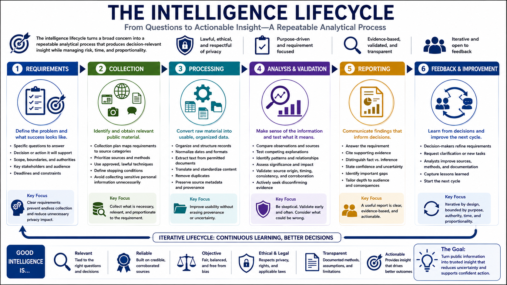

The OSINT Intelligence Lifecycle
Connecting to LMS... Progress: in progress

Narration
The intelligence lifecycle turns a broad concern into a repeatable analytical process. It begins with requirements: the specific questions the work must answer, the decision it will support, the permitted scope, and the deadline. Clear requirements prevent endless collection and reduce unnecessary privacy impact.
Collection identifies and obtains relevant public material using approved methods. A collection plan maps each requirement to likely source categories, priorities, and stopping conditions. Analysts should avoid gathering sensitive personal information simply because it is technically visible.
Processing converts collected material into a usable form. This may include organizing records, normalizing dates, extracting text from permitted documents, translating content, removing duplicates, and preserving source metadata. Processing should not erase provenance or uncertainty.
Analysis compares observations, tests explanations, identifies patterns, and assesses significance. Validation checks source origin, timing, internal consistency, and corroboration. Analysts should actively look for disconfirming evidence instead of selecting only material that supports an early theory.
Reporting communicates findings for the intended audience. A useful report answers the requirement, cites supporting evidence, distinguishes fact from inference, states confidence, and identifies important gaps. Detail should match the reader's role and the consequences of action.
Feedback closes the lifecycle. Decision-makers may refine the requirement, request clarification, or identify new questions. Analysts can also improve source selection and documentation based on review. The lifecycle is iterative, but it remains bounded by purpose, authority, time, and proportionality.